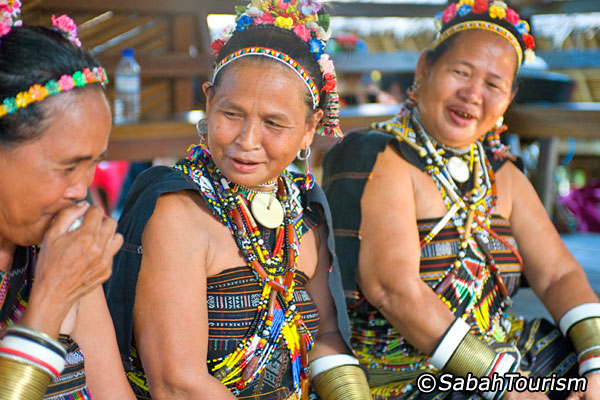

Kota Kinabalu – known to locals as KK – is Sabah’s capital. While it may not be the most distinguished spot in Borneo, this city has more than its fair share of attractions. The largest city in the state, KK can best be described as a dense grid of concrete structures with colourful storefronts and plenty of high rises. Sitting on reclaimed land down the coast, the forested hills lie to the east of this city and budget accommodation, leisure activities, shopping malls and nightlife offerings are a dime-a-dozen.
The Kota Kinabalu Glitter with Cultural Dance is a good way to experience the vivid sights of KK at night. The tour kicks off with a visit to a culture-rich night market – you can sample local snacks, purchase various trinkets including apparel and observe as locals procure their weekly household produce. Later, watch as the sun sets on the city from Signal Hill’s observation deck and view the neon pink, bright green, electric blue and warm yellow lights bring the city to life. Soon after enjoy a seafood dinner while you watch a lively cultural performance – a traditional Sabahan dance. The rest of the night belongs to you – either head on over to one of Sabah’s numerous shopping malls for a bout of bargain hunting or paint the town red at any of the city’s vibrant nightclubs.
| 01/04/14 - 31/03/15 KOTA KINABALU GLITTER WITH CULTURAL DANCE Rates per person in Malaysia Ringgit |
|
|---|---|
| Adult Price | Child Price |
| RM 175 | RM 105 |
|
Restriction:
|
|